電漿蝕刻 Plasma Etching →
電子撞分子、鞘層、等向性與非等向性、選擇比，以及 radical etch 怎麼濾掉離子。
ETCH IN PRACTICE / 3D GIF
同一個 recipe，為什麼今天跑出來和昨天不一樣？答案常常不在 recipe，而在腔壁、RF 零件、晶圓上的圖形和 ESC 溫度。這一頁用 16 張 3D 動畫 GIF，先看一個 recipe 的 BT / ME / OE 三個步驟，再把蝕刻常見的特性一個一個拆開看：左邊看機制，右邊看工程師平常盯的趨勢圖。GIF 沒有編號，可以依課程需要自由穿插使用。
OVERVIEW
| 蝕刻步驟 | BT / ME / OE |
|---|---|
| 腔體狀態 | First wafer effect、Season、腔壁沉積與漂移、WAC（Waferless Auto Clean）、Coupon test、剝落微粒與記憶效應 |
| RF 效應（tool shift） | RF 傳輸、匹配與老化 |
| Loading effect | Loading effect、Micro loading（iso / dense） |
| ESC 溫度控制 | ESC 溫度效應、Hydra 多區溫控 |
| 脈衝電漿 | Pulsing |
| 製程監控與輪廓 | Endpoint 偵測（OES）、常見的輪廓缺陷 |
| 課程總結 | 三個 Take Away |
RECIPE STEPS
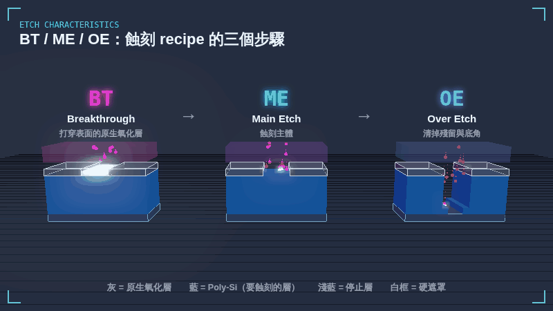
一個蝕刻 recipe 通常分成三步。BT（Breakthrough）先用高離子能量、幾乎沒有選擇比的條件，在很短的時間內打穿表面的原生氧化層。ME（Main Etch）是蝕刻主體，速率高，側壁輪廓在這一步決定，並用 OES 監看 endpoint。抓到 endpoint 後換到 OE（Over Etch），用低離子能量、對停止層選擇比高的條件，把較慢處的殘留和底角 footing 清乾淨，又不打穿停止層。
| BT | 打開原生氧化層：時間短、離子能量高、選擇比低 |
|---|---|
| ME | 蝕刻主體、決定輪廓：用 endpoint 結束 |
| OE | 清殘留與 footing：離子能量低、選擇比高，時間常用 ME 的 % |
| OE 的取捨 | 太少 → 殘留、footing；太多 → 傷停止層、側壁被吃 |
CHAMBER CONDITION
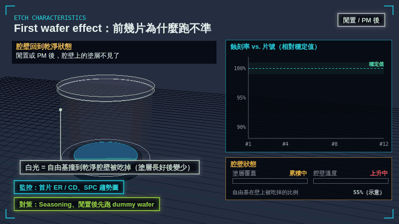
腔體閒置或 PM 後，腔壁是乾淨的。乾淨的壁面會吃掉較多自由基，壁溫也還沒爬到穩定值，所以前幾片的蝕刻率和 CD 會偏離。跑過幾片、腔壁長出一層塗層之後，結果才會收斂到穩定值。
| 原因 | 乾淨腔壁吃掉自由基、壁溫未穩定 |
|---|---|
| 怎麼看 | 首片 ER / CD、SPC 趨勢圖 |
| 怎麼處理 | Season、閒置後先跑 dummy wafer |
CHAMBER CONDITION
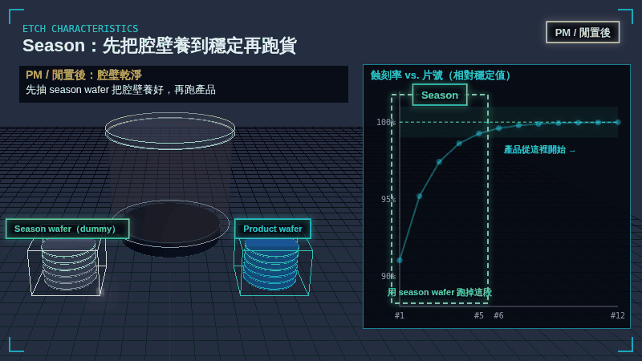
正式跑產品之前，先用 dummy wafer 或 season recipe 在腔壁長出塗層，把腔體「養」到和穩定生產時一樣的狀態。這樣第一片產品晶圓就不會有 first wafer effect。片數越多越穩，但會花時間和 dummy wafer，所以要找出夠用的最少片數。
| 時機 | PM、長時間閒置、換 recipe 之後 |
|---|---|
| 確認方式 | OES、測試片蝕刻率 |
| 取捨 | 穩定度 vs. 時間與 dummy wafer 成本 |
CHAMBER CONDITION
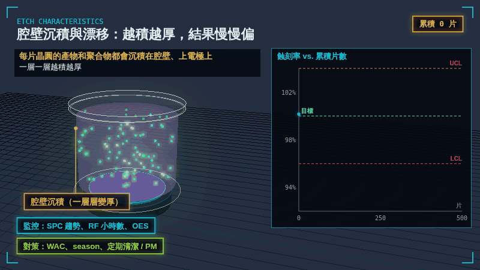
每片晶圓的蝕刻產物和聚合物都會沉積在腔壁、上電極和 liner 上，一層層越積越厚。壁面吸附與復合自由基的狀況、沉積物被打回電漿的量都在改變，蝕刻率和 CD 會隨累積片數慢慢漂移，最後超出管制界線。
| 原因 | 腔壁沉積累積，壁面條件改變 |
|---|---|
| 怎麼看 | SPC 趨勢、RF 小時數、OES |
| 怎麼處理 | WAC、season、定期清潔 / PM |
CHAMBER CONDITION
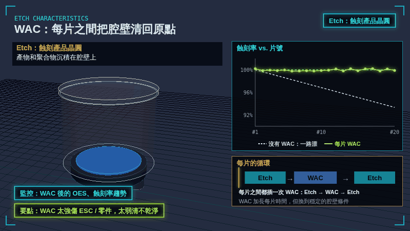
出片後不放晶圓，直接點 O₂ 或 NF₃ 等電漿，把腔壁沉積吃掉、產物抽走，接著下一片進腔再 etch，也就是 Etch → WAC → Etch 的循環。每一片開始時腔壁都在同一個乾淨的狀態，蝕刻率就不會一路漂移。沒有晶圓時 ESC 是裸露的，WAC recipe 要避免傷到 ESC。
| 做什麼 | 每片之間插一次無晶圓電漿清潔 |
|---|---|
| 效果 | 每片從同一個腔壁條件開始 |
| 要點 | 太強傷 ESC / 零件，太弱清不乾淨 |
CHAMBER CONDITION
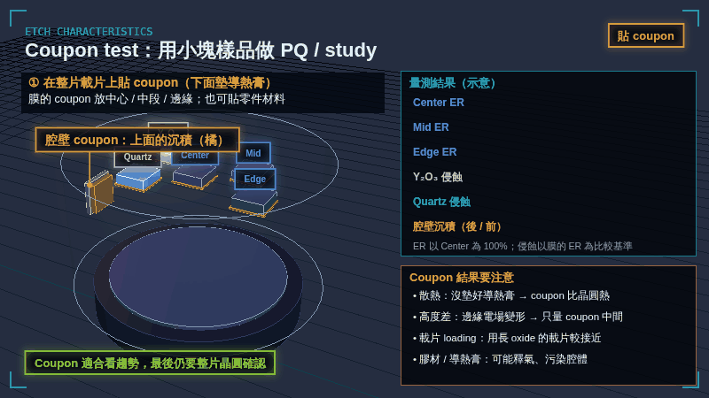
做 WAC 或製程 study 時，常在一片完整的載片上貼小塊樣品（coupon），下面墊導熱膏。膜的 coupon 放在中心、中段、邊緣，看位置差異；也可以貼 Y₂O₃、石英等零件材料，看會不會被侵蝕；腔壁 liner 上再貼一片 coupon，直接看沉積有沒有被清掉。跑完取出量前後的厚度、重量或成分。要注意 coupon 的溫度、高度差、載片 loading 和膠材污染都和真正的晶圓不同，所以適合看趨勢，最後仍要用整片晶圓確認。
| 貼在載片上 | 膜：中心 / 中段 / 邊緣；零件材料：Y₂O₃、石英等 |
|---|---|
| 貼在腔壁上 | 看 WAC 有沒有把沉積清乾淨 |
| 量什麼 | 前後厚度、重量、成分（XPS / EDX） |
| 要注意 | 導熱膏、只量中間、用長 oxide 的載片、膠材污染 |
CHAMBER CONDITION
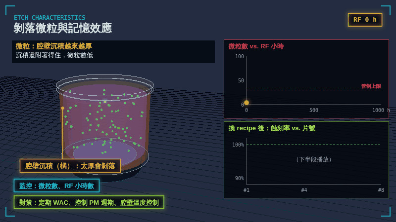
腔壁沉積太厚時，應力累積會讓它龜裂剝落，碎片掉到晶圓上變成微粒缺陷，微粒數在接近 PM 前快速上升。另外，上一個 recipe 留在壁上的殘留物，換 recipe 後會被放回電漿裡（記憶效應），讓前幾片的結果偏掉。
| 微粒 | 監控微粒數與 RF 小時，控制 PM 週期 |
|---|---|
| 記憶效應 | 換 recipe 後監看前幾片 ER / CD |
| 怎麼處理 | 定期 WAC；換 recipe 前 WAC + season，或分機台 |
RF / TOOL SHIFT
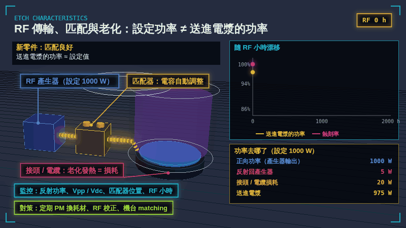
產生器設定 1000 W，不代表電漿就拿到 1000 W。接頭、電纜、電極隨 RF 小時老化，接觸電阻變大，一部分功率變成熱；腔體阻抗漂移時匹配器調到極限，反射功率變多。實際送進電漿的功率變少，蝕刻率就跟著 shift。PM 換零件後也常出現一次 shift。
| 功率去哪了 | 反射回產生器、接頭 / 電纜損耗 |
|---|---|
| 怎麼看 | 反射功率、Vpp / Vdc、匹配器位置、RF 小時 |
| 怎麼處理 | 定期 PM 換耗材、RF 校正、機台 matching |
LOADING EFFECT
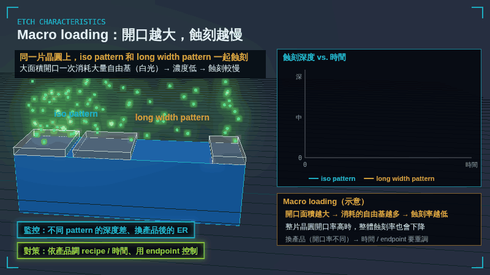
同樣是 iso pattern 加 long width pattern，看蝕刻的瓶頸是自由基還是離子，趨勢剛好相反。以自由基為主時，大開口一次消耗大量自由基、附近濃度變低，所以 long width 比較慢（loading）。以離子為主時，每單位面積打下來的離子通量差不多，大開口不太受影響；反而窄的 iso 開口裡，離子被側壁擋住、斜射的打不到底，產物也排不出去，所以 iso 比較慢（RIE lag / ARDE）。實際製程多半兩者混合，要先判斷瓶頸在哪裡。
| 以自由基為主 | long width 較慢：自由基被大量消耗 |
|---|---|
| 以離子為主 | long width 較快：窄的 iso 有 ARDE |
| 整片晶圓開口率 | 自由基為主時影響大，換產品要重調時間 / endpoint |
| 判斷方法 | 比較不同開口率、不同寬度的深度差，看是哪一個在限制 |
LOADING EFFECT
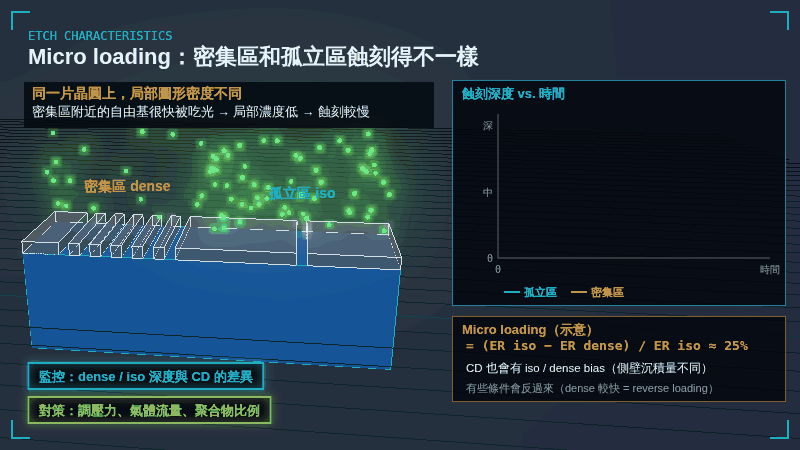
同一片晶圓上，圖形密集的區域附近自由基很快被吃光，局部濃度低，蝕刻得比孤立區慢；CD 也會因為側壁沉積量不同而有 iso / dense bias。有些條件下會反過來，密集區反而比較快（reverse loading）。
| 原因 | 局部自由基被消耗的程度不同 |
|---|---|
| 怎麼看 | dense / iso 深度與 CD 差異 |
| 怎麼處理 | 調壓力、氣體流量、聚合物比例 |
ESC TEMPERATURE
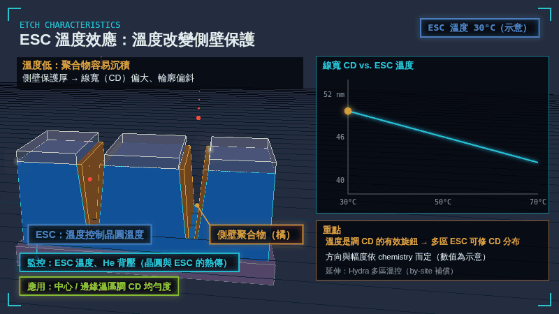
晶圓溫度會影響聚合物沉積的速度。溫度低時聚合物容易沉積，側壁保護厚，線寬（CD）偏大、輪廓偏斜；溫度高時聚合物少，側向被吃，CD 變小，太熱會 undercut。所以 ESC 溫度是調 CD 的有效旋鈕，方向與幅度依 chemistry 而定。
| 機制 | 溫度 → 聚合物沉積 → 側壁保護 → CD |
|---|---|
| 怎麼看 | ESC 溫度、He 背壓 |
| 應用 | 中心 / 邊緣溫區調 CD 均勻度 |
ESC TEMPERATURE
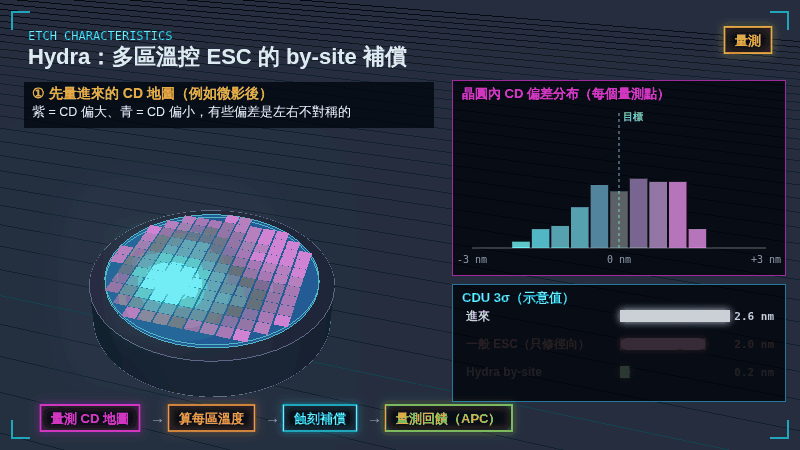
一般 ESC 只有幾個同心圓溫區，只能修徑向（中心到邊緣）的差異。Hydra 把 ESC 分成很多個可獨立控制的加熱小區，拿前段量到的 CD 地圖（例如微影後）算出每一區該設多少溫度：CD 偏大的地方調高溫度，讓那裡被吃小一點。蝕刻後再量一次、回饋給下一批，晶圓內的 CDU 3σ 就能明顯縮小。
| 一般 ESC | 少數同心圓溫區，只修徑向 |
|---|---|
| Hydra | 很多個獨立加熱小區，修不對稱的局部偏差 |
| 流程 | 量測 CD 地圖 → 算每區溫度 → 蝕刻補償 → 回饋（APC） |
PULSED PLASMA
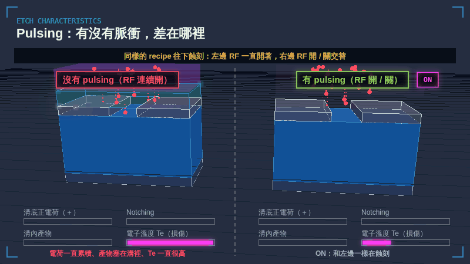
左右對照同一個 recipe：左邊 RF 一直開著，右邊 RF 開 / 關交替。OFF 時沒有離子轟擊，蝕刻幾乎停下來，所以右邊比較慢。兩邊都蝕到停止層、再做同樣多的 over-etch 後比較：連續 RF 時電子到不了溝底，正電荷一直累積，把離子推向側壁，在溝底挖出 notch；產物塞在溝裡，電子溫度也一直很高。Pulsing 在 OFF 時讓電子進到溝底中和電荷、產物排出、電子溫度降下來，所以幾乎沒有 notch。代價是平均蝕刻率較低，duty 60% 時大約要花 1.7 倍的時間。
| 溝底電荷 | 連續 RF 一直累積；pulsing 每次 OFF 被中和 |
|---|---|
| Notching | 連續 RF 明顯；pulsing 幾乎沒有 |
| 溝內產物 / Te | 連續 RF 塞住、一直高；pulsing OFF 時排出、降下來 |
| 代價 | OFF 時不蝕刻 → 平均蝕刻率約 duty cycle 倍，時間變長 |
MONITOR & PROFILE
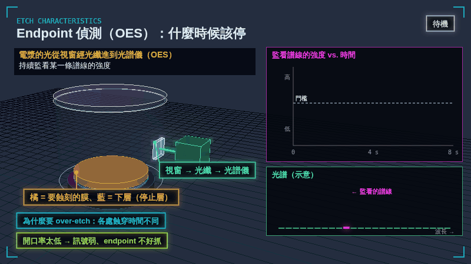
電漿的光經視窗和光纖送進光譜儀，持續監看某一條譜線。上層膜還在蝕刻時，產物發出的譜線很強；蝕穿到下層後產物變少，強度掉下來，跨過門檻就判定 endpoint，之後再加一段 over-etch，把各處殘留清乾淨。
| 訊號 | 監看譜線強度的變化 |
|---|---|
| 為什麼要 over-etch | 晶圓上各處蝕穿的時間不同 |
| 限制 | 開口率太低時訊號弱、不好抓 |
MONITOR & PROFILE
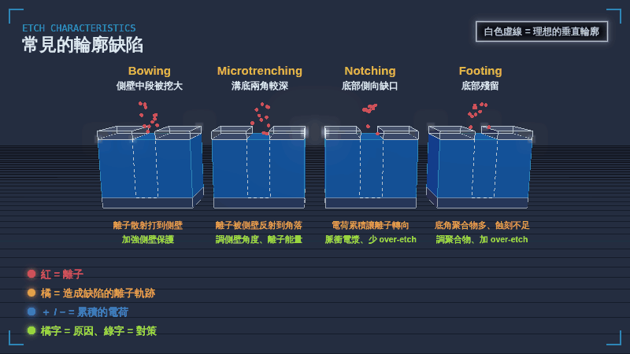
Bowing 是離子散射打到側壁中段，把中段挖大；microtrenching 是離子被傾斜的側壁反射、集中到溝底兩角；notching 是蝕到絕緣層時電荷累積，讓離子轉向、在底部側向挖出缺口；footing 是底角聚合物太多或蝕刻不足，留下殘留。
| Bowing | 加強側壁保護 |
|---|---|
| Microtrenching | 調側壁角度、離子能量 |
| Notching | 脈衝電漿、減少 over-etch |
| Footing | 調聚合物比例、加 over-etch |
SUMMARY
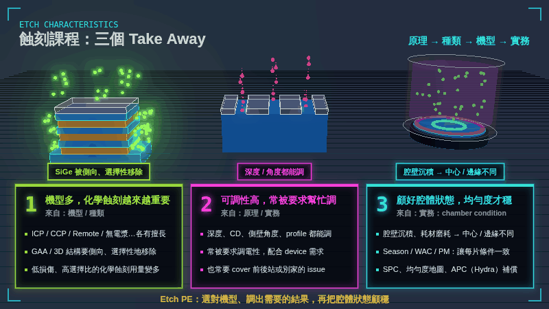
把原理、種類、機型、實務四門課濃縮成三句話。第一，蝕刻機型很多，先進製程裡低損傷、高選擇比的化學蝕刻占比越來越高，例如 GAA 的 SiGe 側向移除。第二，蝕刻的可調性很高，深度、CD、側壁角度和 profile 都能調，所以常被要求幫忙調電性，或 cover 前後站、別家的 issue。第三，chamber condition 的維持對均勻度非常重要，要靠 season、WAC、PM 讓每片條件一致，再用 SPC、均勻度地圖和 APC 監控補償。
| 1 | 機型多，化學蝕刻越來越重要 |
|---|---|
| 2 | 可調性高，常被要求幫忙調 |
| 3 | 顧好腔體狀態，均勻度才穩 |
| 一句話 | 選對機型、調出需要的結果，再把腔體狀態顧穩 |
RELATED
電子撞分子、鞘層、等向性與非等向性、選擇比，以及 radical etch 怎麼濾掉離子。
各種電漿源怎麼推電子、電漿在哪裡最濃、適合做什麼。
動畫為教學用示意：趨勢圖上的數值（蝕刻率、CD、3σ、功率、溫度）都是示意值，用來說明方向與量級，並非特定機台或製程的實際數據；結構與腔體也經過簡化。網頁上顯示的是 800×450 的預覽；按「下載 1080P GIF」可取得 1920×1080 的原檔，循環播放、第一格就是完整畫面，可直接放進簡報。